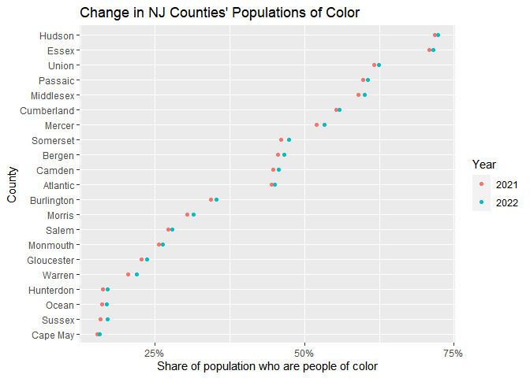

The goal of urbnindicators is to provide users with a simple interface to generate a ready-for-analysis dataset of common social sciences measures. It is built on top of the tidycensus package and abstracts common query and cleaning tasks–such as identifying required variable codes to pass to tidycensus::get_acs(), calculating percentages and other measures of interest that are derived from count estimates, and renaming variables such that they are semantically-meaningful (but still programmatically functional). In addition to simplicity, it includes a series of data quality checks to help ensure that measures are accurately computed and to provide users with quantifications of measures’ reliability (using coefficients of variation) rather than merely returning margins of error (which are often immediately dropped from analysis workflows without further consideration.
(aspirational) urbnindicators also provides a set of related tools to facilitate common tasks when working with Census data (and ACS data in particular), such as calculating calculating measures of segregation, interpolating data across geographies and over time, and providing change-over-time measures.
Installation
Install the development version of urbnindicators from GitHub with:
# install.packages("devtools")
devtools::install_github("UI-Research/urbnindicators")This package is under active development with frequent updates–check to ensure you have the most recent version installed!
urbnindicators in action
suppressPackageStartupMessages({
library(dplyr)
library(stringr)
library(urbnindicators)
library(ggplot2)
})
acs_df = compile_acs_data(
variables = NULL,
years = c(2021, 2022),
geography = "county",
states = "NJ",
counties = NULL,
retain_moes = TRUE)
#> Getting data from the 2017-2021 5-year ACS
#> Getting data from the 2018-2022 5-year ACS
acs_df %>%
select(NAME, data_source_year, race_personofcolor_percent) %>%
mutate(county_name = NAME %>% str_remove(" County, New Jersey")) %>%
ggplot(aes(
x = reorder(county_name, race_personofcolor_percent),
y = race_personofcolor_percent,
color = factor(data_source_year))) +
geom_point() +
labs(
title = "Change in NJ Counties' Populations of Color, 2021 to 2022",
x = "County",
y = "Share of population who are people of color",
color = "Year") +
scale_y_continuous(
breaks = c(0, .25, .50, .75, 1.0),
labels = scales::percent) +
coord_flip() +
theme_minimal() +
theme(
axis.title = element_text(size = 9, face = "italic"),
plot.title = element_text(size = 11, face = "bold"),
panel.grid.minor = element_blank(),
panel.grid.major.x = element_blank(),
legend.title = element_text(size = 9, face = "bold"),
legend.text = element_text(size = 8))